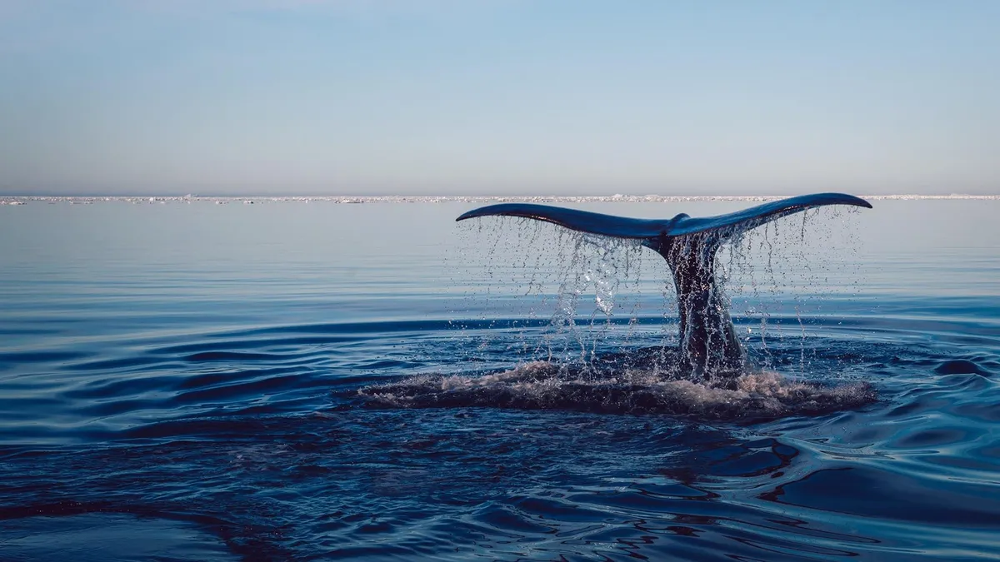

Okyanuslar ve denizler, dünya yüzeyinin yaklaşık %71'ini kaplayan devasa su kütleleridir. Bu muhteşem ekosistemler, dünya üzerindeki yaşamın başlangıç noktası olarak kabul edilmektedir. Denizler, sadece balıklar ve deniz memelileri için değil, aynı zamanda planktonlar, mercanlar ve binlerce farklı canlı türü için yaşam alanı oluşturmaktadır. Küresel iklim sisteminde önemli bir rol oynayan okyanuslar, atmosferdeki karbondioksitin önemli bir kısmını emmekte ve dünya genelindeki sıcaklık dağılımını düzenlemektedir. Ancak, aşırı avlanma, plastik kirliliği, asitleşme ve iklim değişikliği gibi tehditler, deniz ekosistemlerinin sağlığını tehlikeye atmaktadır. Bu nedenle, denizlerin korunması ve sürdürülebilir kullanımı için küresel işbirliği ve bilinçlendirme çalışmaları büyük önem taşımaktadır.
